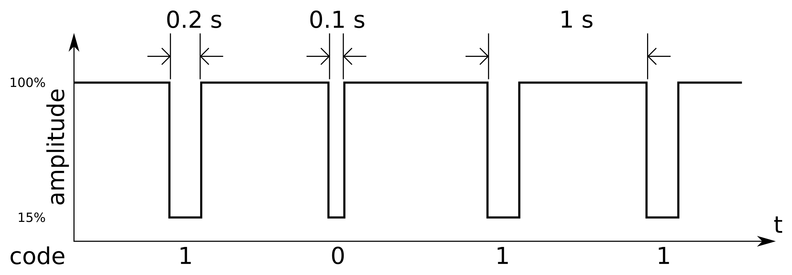

{kind=link}
using RadioClock
data = DCF77Data("000000000000000001001000100100000011111010001111001010010010")
RadioClock.decode(DCF77, data)2025-07-17T20:48:00+02:00RadioClock.jlUCL
2026-08-14
01
Amplitude modulated signal of DCF77 as a function of time (source: https://commons.wikimedia.org/wiki/File:DCF77_code.svg)
| Bits | Meaning |
|---|---|
| 0 | Start of minute, always 0 |
| 1–14 | Civil warning bits, encrypted weather forecast |
| 15 | Call bit (transmitter abnormality) |
| 16 | Summer time announcement |
| 17–18 | CEST / CET flags |
| 19 | Leap second announcement |
| 20 | Start of time information, always 1 |
| 21–28 | Minutes (BCD) + parity |
| 29–35 | Hours (BCD) + parity |
| 36–57 | Day of month, day of week, month, year in century (BCD) |
| 58 | Date parity |
| 59 | Not transmitted (minute marker) |
RadioClock.jlDCF77Data: the whole 60-bit signal stored in a single UInt64, constructible from an integer or a binary stringdecode / encode convert between DCF77Data and ZonedDateTimeA minute’s worth of bits, as received on 2025-07-17:
2025-07-17T20:48:00+02:00The pretty-printing of DCF77Data gives the answer away, too:
decode checks everythingAssertionError: Minutes data is not consistent with parity check. Input was 0x494f17c09320000 Stacktrace: [1] decode(::Type{DCF77}, data::DCF77Data) @ RadioClock ~/.julia/packages/RadioClock/P9EOw/src/dcf77.jl:140 [2] top-level scope @ ~/work/2026-08-14-juliacon/2026-08-14-juliacon/radioclock/index.qmd:105
decode returns a ZonedDateTime, not a naive timestampTimeZones.jlRadioClock.jl assumes 2000–2099Generating the signal for a given time:
Date: 2026-08-14T10:30:00+02:00
Binary representation: 000000000000000001001000011000000101001010101000100110010000Handy for generating test data — or for a transmitter of your own1
UInt64: masks and shifts, no arrays, no allocationsDCF77 is an empty struct, a subtype of RadioSignal, used purely for dispatch:RadioSignal abstraction:
Contributions welcome!
ZonedDateTime out — and back